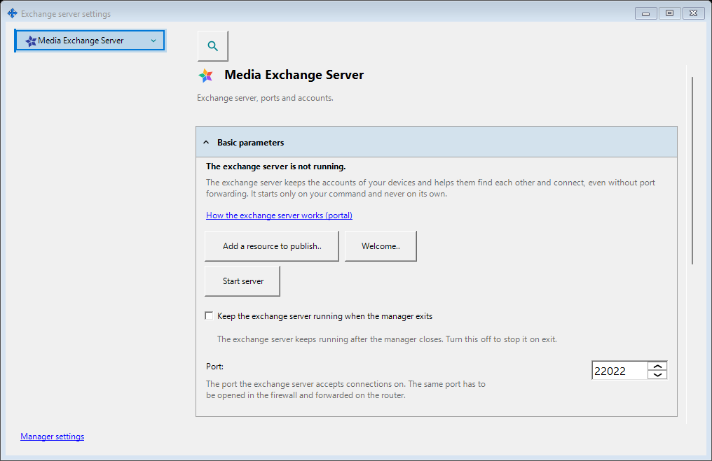
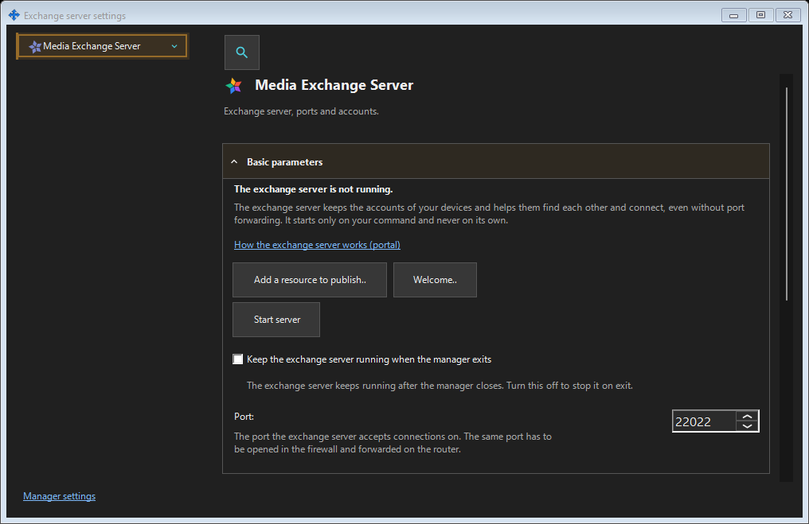

Exchange server settings
What this is for
Administer the exchange server installed on this PC: listener and public endpoint, TLS certificate, accounts, devices and invitations, service operation, keep-awake, log retention, remote administration and audit. A remote client signs in from Manager settings instead.


In this order
Open the local server entry in the tray, the server wizard handover, or the link from another settings window. Check server identity and state before acting. Apply each edited group explicitly. Start, stop, service maintenance and certificate changes remain separate commands with their existing confirmations. Opening or closing the window starts and stops nothing.
The elements
Exchange server settings
Administer the exchange server installed on this PC: listener and public endpoint, TLS certificate, accounts, devices and invitations, service operation, keep-awake, log retention, remote administration and audit. A remote client signs in from Manager settings instead. Open the local server entry in the tray, the server wizard handover, or the link from another settings window. Check server identity and state before acting. Apply each edited group explicitly. Start, stop, service maintenance and certificate changes remain separate commands with their existing confirmations. Opening or closing the window starts and stops nothing.
Manager settings · SFTP sharing settings · Exchange server settings